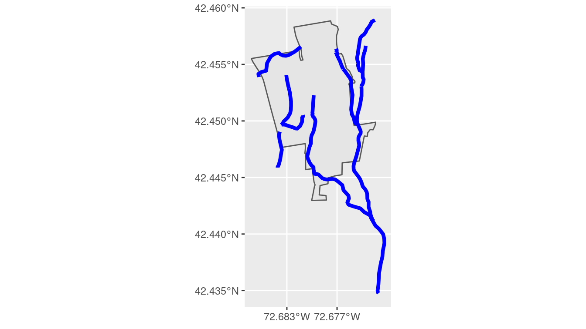
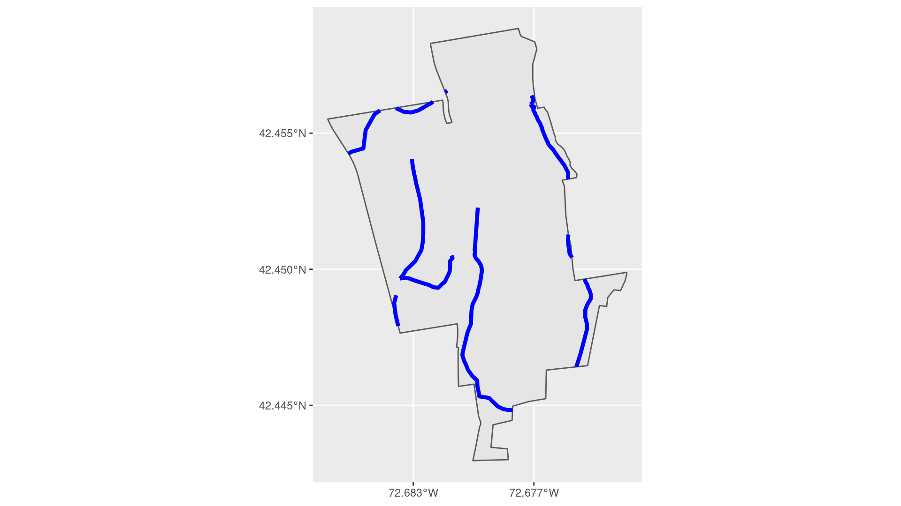
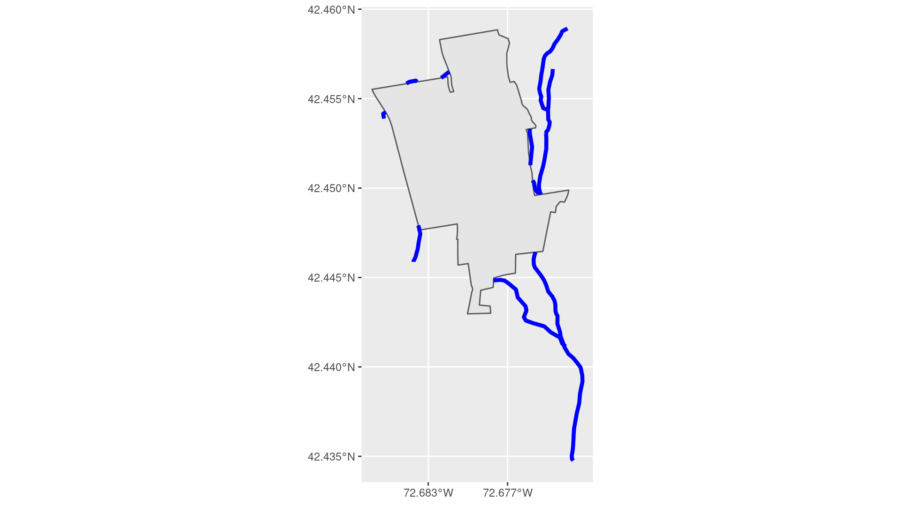
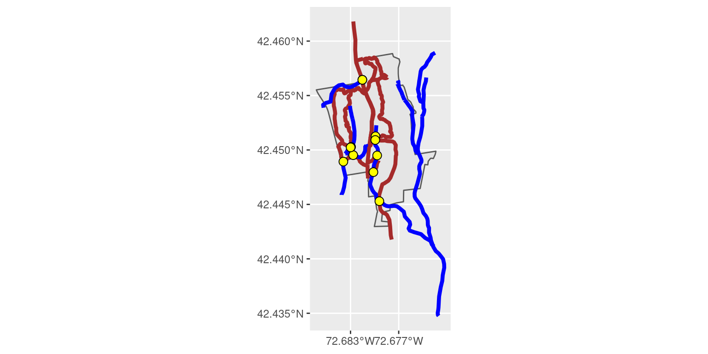
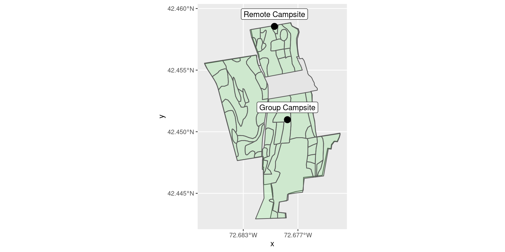
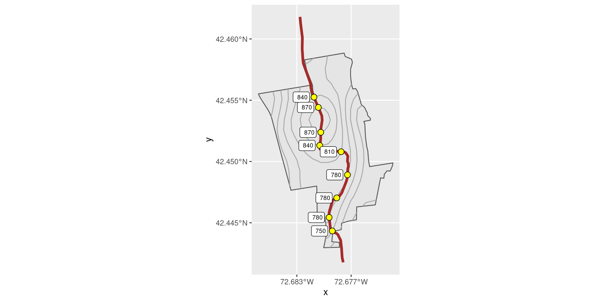
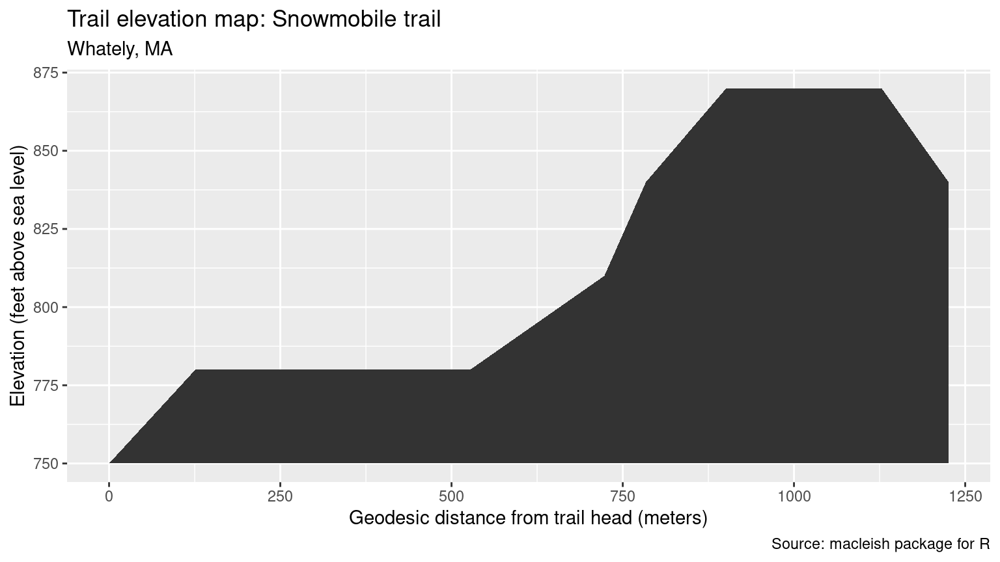

Chapter 18 Geospatial computations
In Chapter 17, we learned how to work with geospatial data. We learned about shapefiles, map projections, and how to plot spatial data using both ggplot2 and leaflet. In this chapter, we will learn how to perform computations on geospatial data that will enable us to answer questions about how long or how big spatial features are. We will also learn how to use geometric operations and spatial joins to create new geospatial objects. These capabilities will broaden the spectrum of analytical tasks we can perform, and accordingly expand the range of questions we can answer.
18.1 Geospatial operations
18.1.1 Geocoding, routes, and distances
The process of converting a human-readable address into geographic coordinates is called geocoding. While there are numerous APIs available online that will do this for you, the functionality provided in tidygeocoder by the geocode() function uses Open Street Map and does not require registration to use the API. Here, we build a data frame of the places of business of the three authors, geocode the addresses of the schools, convert the resulting data frame into an sf object, and set the projection to epsg:4326 (see Chapter 17).
library(tidyverse)
library(mdsr)
library(sf)
library(tidygeocoder)
colleges <- tribble(
~school, ~address,
"Smith", "44 College Lane, Northampton, MA 01063",
"Macalester", "1600 Grand Ave, St Paul, MN 55105",
"Amherst", "Amherst College, Amherst, MA 01002"
) %>%
geocode(address, method = "osm") %>%
st_as_sf(coords = c("long", "lat")) %>%
st_set_crs(4326)
collegesSimple feature collection with 3 features and 2 fields
Geometry type: POINT
Dimension: XY
Bounding box: xmin: -93.2 ymin: 42.3 xmax: -72.5 ymax: 44.9
Geodetic CRS: WGS 84
# A tibble: 3 × 3
school address geometry
* <chr> <chr> <POINT [°]>
1 Smith 44 College Lane, Northampton, MA 01063 (-72.6 42.3)
2 Macalester 1600 Grand Ave, St Paul, MN 55105 (-93.2 44.9)
3 Amherst Amherst College, Amherst, MA 01002 (-72.5 42.4)Geodesic distances can be computed using the st_distance() function in sf. Here, we compute the distance between two of the Five Colleges36.
colleges %>%
filter(school != "Macalester") %>%
st_distance()Units: [m]
[,1] [,2]
[1,] 0 11962
[2,] 11962 0The geodesic distance is closer to “as the crow files,” but we might be more interested in the driving distance between two locations along the road.
To compute this, we need to access a service with a database of roads.
Here, we use the openroute service, which requires an API key37. The openrouteservice package provides this access via the ors_directions() function.
Note that the value of the API key is not shown.
You will need your own API key to use this service.
library(openrouteservice)
ors_api_key()
smith_amherst <- colleges %>%
filter(school != "Macalester") %>%
st_coordinates() %>%
as_tibble()
route_driving <- smith_amherst %>%
ors_directions(profile = "driving-car", output = "sf")Note the difference between the geodesic distance computed above and the driving distance computed below. Of course, the driving distance must be longer than the geodesic distance.
route_driving %>%
st_length()13541 [m]If you prefer, you can convert meters to miles using the set_units() function from the units package.
route_driving %>%
st_length() %>%
units::set_units("miles")8.41 [miles]Given the convenient Norwottuck Rail Trail connecting Northampton and Amherst, we might prefer to bike. Will that be shorter?
route_cycling <- smith_amherst %>%
ors_directions(profile = "cycling-regular", output = "sf")
route_cycling %>%
st_length()14050 [m]It turns out that the rail trail path is slightly longer (but far more scenic).
Since the Calvin Coolidge Bridge is the only reasonable way to get from Northampton to Amherst when driving, there is only one shortest route between Smith and Amherst, as shown in Figure 18.1. We also show the shortest biking route, which follows the Norwottuck Rail Trail.
library(leaflet)
leaflet() %>%
addTiles() %>%
addPolylines(data = route_driving, weight = 10) %>%
addPolylines(data = route_cycling, color = "green", weight = 10)Figure 18.1: The fastest route from Smith College to Amherst College, by both car (blue) and bike (green).
However, shortest paths in a network are not unique (see Chapter 20). Ben’s daily commute to Citi Field from his apartment in Brooklyn presented three distinct alternatives:
- One could take the Brooklyn-Queens Expressway (I-278 E) to the Grand Central Parkway E and pass by LaGuardia Airport.
- One could continue on the Long Island Expressway (I-495 E) and then approach Citi Field from the opposite direction on the Grand Central Parkway W.
- One could avoid highways altogether and take Roosevelt Avenue all the way through Queens.
The latter route is the shortest but often will take longer due to traffic. The first route is the most convenient approach to the Citi Field employee parking lot. These two routes are overlaid on the map in Figure 18.2.
commute <- tribble(
~place, ~address,
"home", "736 Leonard St, Brooklyn, NY",
"lga", "LaGuardia Airport, Queens, NY",
"work", "Citi Field, 41 Seaver Way, Queens, NY 11368",
) %>%
geocode(address, method = "osm") %>%
st_as_sf(coords = c("long", "lat")) %>%
st_set_crs(4326)
route_direct <- commute %>%
filter(place %in% c("home", "work")) %>%
st_coordinates() %>%
as_tibble() %>%
ors_directions(output = "sf", preference = "recommended")
route_gcp <- commute %>%
st_coordinates() %>%
as_tibble() %>%
ors_directions(output = "sf")
leaflet() %>%
addTiles() %>%
addMarkers(data = commute, popup = ~place) %>%
addPolylines(data = route_direct, color = "green", weight = 10) %>%
addPolylines(data = route_gcp, weight = 10)Figure 18.2: Alternative commuting routes from Ben’s old apartment in Brooklyn to Citi Field. Note that the routes overlap for most of the way from Brooklyn to the I-278 E onramp on Roosevelt Avenue.
18.1.2 Geometric operations
Much of the power of working with geospatial data comes from the interactions between various layers of data. The sf package provides many features that enable us to compute with geospatial data.
A basic geospatial question is: what part of one series of geospatial objects lies within another set? To illustrate, we use geospatial data from the MacLeish field station in Whately, MA. These data are provided by the macleish package. Figure 18.3 illustrates that there are several streams that pass though the MacLeish property.
library(sf)
library(macleish)
boundary <- macleish_layers %>%
pluck("boundary")
streams <- macleish_layers %>%
pluck("streams")
boundary_plot <- ggplot(boundary) +
geom_sf() +
scale_x_continuous(breaks = c(-72.677, -72.683))
boundary_plot +
geom_sf(data = streams, color = "blue", size = 1.5)
Figure 18.3: Streams cross through the boundary of the MacLeish property.
The data from MacLeish happens to have a variable called Shape_Area that contains the precomputed size of the property.
boundary %>%
pull(Shape_Area)[1] 1033988Is this accurate? We can easily compute basic geometric properties of spatial objects like area and length using the st_area function.
st_area(boundary)1032353 [m^2]The exact computed area is very close to the reported value. We can also convert the area in square meters to acres by dividing by a known conversion factor.
st_area(boundary) / 4046.8564224255 [m^2]Similarly, we can compute the length of each segment of the streams and the location of the centroid of the property.
streams %>%
mutate(length = st_length(geometry))Simple feature collection with 13 features and 2 fields
Geometry type: LINESTRING
Dimension: XY
Bounding box: xmin: -72.7 ymin: 42.4 xmax: -72.7 ymax: 42.5
Geodetic CRS: WGS 84
First 10 features:
Id geometry length
1 1 LINESTRING (-72.7 42.5, -72... 593.3 [m]
2 1 LINESTRING (-72.7 42.5, -72... 412.3 [m]
3 1 LINESTRING (-72.7 42.5, -72... 137.9 [m]
4 1 LINESTRING (-72.7 42.5, -72... 40.3 [m]
5 1 LINESTRING (-72.7 42.5, -72... 51.0 [m]
6 1 LINESTRING (-72.7 42.5, -72... 592.8 [m]
7 1 LINESTRING (-72.7 42.5, -72... 2152.4 [m]
8 3 LINESTRING (-72.7 42.5, -72... 1651.3 [m]
9 3 LINESTRING (-72.7 42.5, -72... 316.2 [m]
10 3 LINESTRING (-72.7 42.5, -72... 388.3 [m]boundary %>%
st_centroid()Simple feature collection with 1 feature and 3 fields
Geometry type: POINT
Dimension: XY
Bounding box: xmin: -72.7 ymin: 42.5 xmax: -72.7 ymax: 42.5
Geodetic CRS: WGS 84
OBJECTID Shape_Leng Shape_Area geometry
1 1 5894 1033988 POINT (-72.7 42.5)As promised, we can also combine two geospatial layers. The functions st_intersects() and st_intersection() take two geospatial objects and return a logical indicating whether they intersect, or another sf object representing that intersection, respectively.
st_intersects(boundary, streams)Sparse geometry binary predicate list of length 1, where the
predicate was `intersects'
1: 3, 4, 5, 6, 7, 8, 9, 10, 11, 12, ...st_intersection(boundary, streams)Simple feature collection with 11 features and 4 fields
Geometry type: GEOMETRY
Dimension: XY
Bounding box: xmin: -72.7 ymin: 42.4 xmax: -72.7 ymax: 42.5
Geodetic CRS: WGS 84
First 10 features:
OBJECTID Shape_Leng Shape_Area Id geometry
1 1 5894 1033988 1 LINESTRING (-72.7 42.5, -72...
1.1 1 5894 1033988 1 LINESTRING (-72.7 42.5, -72...
1.2 1 5894 1033988 1 LINESTRING (-72.7 42.5, -72...
1.3 1 5894 1033988 1 MULTILINESTRING ((-72.7 42....
1.4 1 5894 1033988 1 LINESTRING (-72.7 42.4, -72...
1.5 1 5894 1033988 3 LINESTRING (-72.7 42.5, -72...
1.6 1 5894 1033988 3 LINESTRING (-72.7 42.5, -72...
1.7 1 5894 1033988 3 LINESTRING (-72.7 42.5, -72...
1.8 1 5894 1033988 3 LINESTRING (-72.7 42.5, -72...
1.9 1 5894 1033988 3 LINESTRING (-72.7 42.4, -72...st_intersects() is called a predicate function because it returns a logical. It answers the question: “Do these two layers intersect?”
On the other hand, st_intersection() performs a set operation. It answers the question: “What is the set that represents the intersection of these two layers?” Similar functions compute familiar set operations like unions, differences, and symmetric differences, while a whole host of additional predicate functions detect containment (st_contains(), st_within(), etc.), crossings, overlaps, etc.
In Figure 18.4(a) we use the st_intersection() function to show only the parts of the streams that are contained within the MacLeish property.
In Figure 18.4(b), we show the corresponding set of stream parts that lie outside of the MacLeish property.
boundary_plot +
geom_sf(
data = st_intersection(boundary, streams),
color = "blue",
size = 1.5
)
boundary_plot +
geom_sf(
data = st_difference(streams, boundary),
color = "blue",
size = 1.5
)

Figure 18.4: Streams on the MacLeish property.
Different spatial geometries intersect in different ways. Above, we saw that the intersection of steams (which are LINESTRINGs) and the boundary (which is a POLYGON) produced LINESTRING geometries. Below, we compute the intersection of the streams with the trails that exist at MacLeish. The trails are also LINESTRING geometries, and the intersection of two LINESTRING geometries produces a set of POINT geometries.
trails <- macleish_layers %>%
pluck("trails")
st_intersection(trails, streams) Simple feature collection with 10 features and 3 fields
Geometry type: GEOMETRY
Dimension: XY
Bounding box: xmin: -72.7 ymin: 42.4 xmax: -72.7 ymax: 42.5
Geodetic CRS: WGS 84
name color Id geometry
8 entry trail - 3 POINT (-72.7 42.4)
9 Eastern Loop Blue 3 POINT (-72.7 42.5)
13 Snowmobile Trail <NA> 3 MULTIPOINT ((-72.7 42.5), (...
15 Driveway <NA> 3 POINT (-72.7 42.4)
6 Western Loop Red 3 POINT (-72.7 42.4)
1 Porcupine Trail White 3 POINT (-72.7 42.5)
6.1 Western Loop Red 3 POINT (-72.7 42.5)
4 Vernal Pool Loop Yellow 3 POINT (-72.7 42.4)
3 Poplar Hill Road Road 3 POINT (-72.7 42.5)
14 Snowmobile Trail <NA> 3 POINT (-72.7 42.5)Note that one of the features is a MULTIPOINT. Occasionally, a trail might intersect a stream in more than one place (resulting in a MULTIPOINT geometry). This occurs here, where the Snowmobile Trail intersects one of the stream segments in two different places. To clean this up, we first use the st_cast() function to convert everything to MULTIPOINT, and then cast everything to POINT. (We can’t go straight to POINT because we start with a mixture of POINTs and MULTIPOINTs.)
bridges <- st_intersection(trails, streams) %>%
st_cast("MULTIPOINT") %>%
st_cast("POINT")
nrow(bridges)[1] 11Note that we now have 11 features instead of 10. In this case, the intersections of trails and streams has a natural interpretation: these must be bridges of some type! How else could the trail continue through the stream? Figure 18.5 shows the trails, the streams, and these “bridges” (some of the points are hard to see because they partially overlap).
boundary_plot +
geom_sf(data = trails, color = "brown", size = 1.5) +
geom_sf(data = streams, color = "blue", size = 1.5) +
geom_sf(data = bridges, pch = 21, fill = "yellow", size = 3)
Figure 18.5: Bridges on the MacLeish property where trails and streams intersect.
18.2 Geospatial aggregation
In Section 18.1.2, we saw how we can split MULTIPOINT geometries into POINT geometries. This was, in a sense, geospatial disaggregation. Here, we consider the perhaps more natural behavior of spatial aggregation.
Just as we saw previously that the intersection of different geometries can produce different resulting geometries, so too will different geometries aggregate in different ways. For example, POINT geometries can be aggregated into MULTIPOINT geometries.
The sf package implements spatial aggreation using the same group_by() and summarize() function that you learned in Chapter 4. The only difference is that we might have to specify how we want the spatial layers to be aggregated. The default aggregation method is st_union(), which makes sense for most purposes.
Note that the trails layer is broken into segments: the Western Loop is comprised of three different features.
trailsSimple feature collection with 15 features and 2 fields
Geometry type: LINESTRING
Dimension: XY
Bounding box: xmin: -72.7 ymin: 42.4 xmax: -72.7 ymax: 42.5
Geodetic CRS: WGS 84
First 10 features:
name color geometry
1 Porcupine Trail White LINESTRING (-72.7 42.5, -72...
2 Western Loop Red LINESTRING (-72.7 42.5, -72...
3 Poplar Hill Road Road LINESTRING (-72.7 42.5, -72...
4 Vernal Pool Loop Yellow LINESTRING (-72.7 42.4, -72...
5 Eastern Loop Blue LINESTRING (-72.7 42.5, -72...
6 Western Loop Red LINESTRING (-72.7 42.5, -72...
7 Western Loop Red LINESTRING (-72.7 42.4, -72...
8 entry trail - LINESTRING (-72.7 42.4, -72...
9 Eastern Loop Blue LINESTRING (-72.7 42.5, -72...
10 Easy Out Red LINESTRING (-72.7 42.5, -72...Which trail is the longest? We know we can compute the length of the features with st_length(), but then we’d have to add up the lengths of each segment. Instead, we can aggregate the segments and do the length computation on the full trails.
trails_full <- trails %>%
group_by(name) %>%
summarize(num_segments = n()) %>%
mutate(trail_length = st_length(geometry)) %>%
arrange(desc(trail_length))
trails_fullSimple feature collection with 9 features and 3 fields
Geometry type: GEOMETRY
Dimension: XY
Bounding box: xmin: -72.7 ymin: 42.4 xmax: -72.7 ymax: 42.5
Geodetic CRS: WGS 84
# A tibble: 9 × 4
name num_segments geometry trail_length
<fct> <int> <GEOMETRY [°]> [m]
1 Snowmobi… 2 MULTILINESTRING ((-72.7 42.5, -72.7 4… 2576.
2 Eastern … 2 MULTILINESTRING ((-72.7 42.5, -72.7 4… 1939.
3 Western … 3 MULTILINESTRING ((-72.7 42.5, -72.7 4… 1350.
4 Poplar H… 2 MULTILINESTRING ((-72.7 42.5, -72.7 4… 1040.
5 Porcupin… 1 LINESTRING (-72.7 42.5, -72.7 42.5, -… 700.
6 Vernal P… 1 LINESTRING (-72.7 42.4, -72.7 42.4, -… 360.
7 entry tr… 1 LINESTRING (-72.7 42.4, -72.7 42.4, -… 208.
8 Driveway 1 LINESTRING (-72.7 42.4, -72.7 42.4, -… 173.
9 Easy Out 2 MULTILINESTRING ((-72.7 42.5, -72.7 4… 136.18.3 Geospatial joins
In Section 17.4.3, we show how the inner_join() function can be used to merge geospatial data with additional data. This works because the geospatial data was stored in an sf object, which is also a data frame. In that case, since the second data frame was not spatial, by necessity the key on which the join was performed was a non-spatial attribute.
A geospatial join is a fundamentally different type of operation, in which both data frames are geospatial, and the joining key is a geospatial attribute. This operation is implemented by the st_join() function, which behaves similarly to the inner_join() function, but with some additional complexities due to the different nature of its task.
To illustrate this, we consider the question of in which type of forest the two campsites at MacLeish lie (see Figure 18.6).
forests <- macleish_layers %>%
pluck("forests")
camp_sites <- macleish_layers %>%
pluck("camp_sites")
boundary_plot +
geom_sf(data = forests, fill = "green", alpha = 0.1) +
geom_sf(data = camp_sites, size = 4) +
geom_sf_label(
data = camp_sites, aes(label = name),
nudge_y = 0.001
)
Figure 18.6: The MacLeish property has two campsites and many different types of forest.
It is important to note that this question is inherently spatial. There simply is no variable between the forests layer and the camp_sites layer that would allow you to connect them other than their geospatial location.
Like inner_join(), the st_join() function takes two data frames as its first two arguments. There is no st_left_join() function, but instead st_join() takes a left argument, that is set to TRUE by default. Finally, the join argument takes a predicate function that determines the criteria for whether the spatial features match. The default is st_intersects(), but here we employ st_within(), since we want the POINT geometries of the camp sites to lie within the POLYGON geometries of the forests.
st_join(camp_sites, forests, left = FALSE, join = st_within) %>%
select(name, type)Simple feature collection with 2 features and 2 fields
Geometry type: POINT
Dimension: XY
Bounding box: xmin: -72.7 ymin: 42.5 xmax: -72.7 ymax: 42.5
Geodetic CRS: WGS 84
# A tibble: 2 × 3
name type geometry
<chr> <fct> <POINT [°]>
1 Group Campsite Old Field White Pine Forest (-72.7 42.5)
2 Remote Campsite Sugar Maple Forest (-72.7 42.5)We see that the Group Campsite is in a Eastern White Pine forest, while the Remote Campsite is in a Sugar Maple forest.
18.4 Extended example: Trail elevations at MacLeish
Many hiking trails provide trail elevation maps (or elevation profiles) that depict changes in elevation along the trail. These maps can help hikers understand the interplay between the uphill and downhill segments of the trail and where they occur along their hike.
More formally, various trail railing systems exist to numerically score the difficulty of a hike. Shenandoah National Park uses this simple trail rating system:
\[ rating = \sqrt{gain \cdot 2 \cdot distance} \] A rating below 50 corresponds to the easiest class of hike.
In this example, we will construct an elevation profile and compute the trail rating for the longest trail at MacLeish. The macleish package contains elevation contours that are 30 feet apart. These are relatively sparse, but they will suffice for our purposes.
elevations <- macleish_layers %>%
pluck("elevation")First, we leverage the spatial aggregation work that we did previously to isolate the longest trail.
longest_trail <- trails_full %>%
head(1)
longest_trailSimple feature collection with 1 feature and 3 fields
Geometry type: MULTILINESTRING
Dimension: XY
Bounding box: xmin: -72.7 ymin: 42.4 xmax: -72.7 ymax: 42.5
Geodetic CRS: WGS 84
# A tibble: 1 × 4
name num_segments geometry trail_length
<fct> <int> <MULTILINESTRING [°]> [m]
1 Snowmobi… 2 ((-72.7 42.5, -72.7 42.5, -72.7 42.5,… 2576.Next, we compute the geospatial intersection between the trails and the elevation contours, both of which are LINESTRING geometries. This results in POINTs, but just as we saw above, there are several places where the trail crosses the same contour line more than once. If you think about walking up a hill and then back down the other side, this should make sense (see Figure 18.7). These multiple intersections result in MULTIPOINT geometries. We unravel these just as we did before: by casting everything to MULTIPOINT and then casting everything back to POINT.
trail_elevations <- longest_trail %>%
st_intersection(elevations) %>%
st_cast("MULTIPOINT") %>%
st_cast("POINT")Figure 18.7 reveals that the Snowmobile trail starts near the southernmost edge of the property at about 750 feet above sea level, snakes along a ridge at 780 feet, before climbing to the local peak at 870 feet, and finally descending the back side of the hill near the northern border of the property.
boundary_plot +
geom_sf(data = elevations, color = "dark gray") +
geom_sf(data = longest_trail, color = "brown", size = 1.5) +
geom_sf(data = trail_elevations, fill = "yellow", pch = 21, size = 3) +
geom_sf_label(
data = trail_elevations,
aes(label = CONTOUR_FT),
hjust = "right",
size = 2.5,
nudge_x = -0.0005
)
Figure 18.7: The Snowmobile Trail at MacLeish, with contour lines depicted.
Finally, we need to put the features in order, so that we can compute the distance from the start of the trail. Luckily, in this case the trail goes directly south to north, so that we can use the latitude coordinate as an ordering variable.
In this case, we use st_distance() to compute the geodesic distances between the elevation contours.
This function returns a \(n \times n\) matrix with all of the pairwise distances, but since we only want the distances from the southernmost point (which is the first element), we only select the first column of the resulting matrix.
To compute the actual distances (i.e., along the trail) we would have to split the trail into pieces. We leave this as an exercise.
trail_elevations <- trail_elevations %>%
mutate(lat = st_coordinates(geometry)[, 2]) %>%
arrange(lat) %>%
mutate(distance_from_start = as.numeric(st_distance(geometry)[, 1]))Figure 18.8 shows our elevation profile for the Snowmobile trail.
ggplot(trail_elevations, aes(x = distance_from_start)) +
geom_ribbon(aes(ymax = CONTOUR_FT, ymin = 750)) +
scale_y_continuous("Elevation (feet above sea level)") +
scale_x_continuous("Geodesic distance from trail head (meters)") +
labs(
title = "Trail elevation map: Snowmobile trail",
subtitle = "Whately, MA",
caption = "Source: macleish package for R"
)
Figure 18.8: Trail elevation map for the Snowmobile trail at MacLeish.
With a rating under 20, this trail rates as one of the easiest according to the Shenandoah system.
trail_elevations %>%
summarize(
gain = max(CONTOUR_FT) - min(CONTOUR_FT),
trail_length = max(units::set_units(trail_length, "miles")),
rating = sqrt(gain * 2 * as.numeric(trail_length))
)Simple feature collection with 1 feature and 3 fields
Geometry type: MULTIPOINT
Dimension: XY
Bounding box: xmin: -72.7 ymin: 42.4 xmax: -72.7 ymax: 42.5
Geodetic CRS: WGS 84
# A tibble: 1 × 4
gain trail_length rating geometry
<dbl> [miles] <dbl> <MULTIPOINT [°]>
1 120 1.60 19.6 ((-72.7 42.4), (-72.7 42.5), (-72.7 42.5), (-72…18.5 Further resources
Lovelace, Nowosad, and Muenchow (2019) and Engel (2019) were both helpful in updating this material to take advantage of sf.
18.6 Exercises
Problem 1 (Medium): The Violations data frame in the mdsr package contains information on violations noted in Board of Health inspections of New York City restaurants. These data contain spatial information in the form of addresses and zip codes.
Use the
geocodefunction intidygeocoderto obtain spatial coordinates for these restaurants.Using the spatial coordinates you obtained in the previous exercise, create an informative static map using
ggspatialthat illustrates the nature and extent of restaurant violations in New York City.Using the spatial coordinates you obtained in the previous exercises, create an informative interactive map using
leafletthat illustrates the nature and extent of restaurant violations in New York City.
Problem 2 (Medium):
Use the spatial data in the
macleishpackage andggspatialto make an informative static map of the MacLeish Field Station property.Use the spatial data in the
macleishpackage andleafletto make an informative interactive map of the MacLeish Field Station property.
Problem 3 (Hard): GIS data in the form of shapefiles is all over the Web. Government agencies are particularly good sources for these. The following code downloads bike trail data in Massachusetts from MassGIS. Use bike_trails to answer the following questions:
if (!file.exists("./biketrails_arc.zip")) {
part1 <- "http://download.massgis.digital.mass.gov/"
part2 <- "shapefiles/state/biketrails_arc.zip"
url <- paste(part1, part2, sep = "")
local_file <- basename(url)
download.file(url, destfile = local_file)
unzip(local_file, exdir = "./biketrails/")
}library(sf)
dsn <- path.expand("./biketrails/biketrails_arc")
st_layers(dsn)Driver: ESRI Shapefile
Available layers:
layer_name geometry_type features fields
1 biketrails_arc Line String 272 13bike_trails <- read_sf(dsn)How many distinct bike trail segments are there?
What is the longest individual bike trail segment?
How many segments are associated with the Norwottuck Rail Trail?
Among all of the named trails (which may have multiple features), which one has the longest total length?
The bike trails are in a Lambert conformal conic projection. Note that the units of the coordinates are very different from lat/long. In order to get these data onto our leaflet map, we need to re-project them. Convert the bike trails to EPSG:4326, and create a leaflet map.
Color-code the bike trails based on their length, and add an informative legend to the plot.
Problem 4 (Hard): The MacLeish snowmobile trail map generated in the book is quite rudimentary. Generate your own map that improves upon the aesthetics and information content.
18.7 Supplementary exercises
Available at https://mdsr-book.github.io/mdsr2e/geospatial-II.html#geospatialII-online-exercises
No exercises found